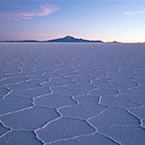
“El Salar de Uyuni” es el más grande del mundo. Esta región semidesértica y de tierras volcánicas encierra en su interior recursos de gran importancia económica como la reserva de 9 millones de toneladas de litio y otros minerales; y paisajes de extraordinaria belleza natural.
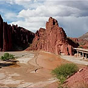
Tupiza está enclavado en el angosto valle del río Tupiza. Se encuentra establecida actualmente en el territorio ancestral de los chichas. Este municipio posee gran riqueza paisajística, desfiladeros y curiosas formaciones rocosas lo acompañan en su entorno.
RESTAURANTE MUSEO - SAN MARCOS Restaurante de Comida Internacional en Potosí. Museo. www.hca-potosi.com/sanmarcos Dirección: c. La Paz Nro. 1565 (Central) - Potosí, POTOSÍ Teléfono: (591-2) 6226717
SALTEÑERIA IMA SUMAJ Salteñerias Dirección: Bustillos Nro. 987 - Potosí, POTOSÍ Teléfono: (591-2) 6222160
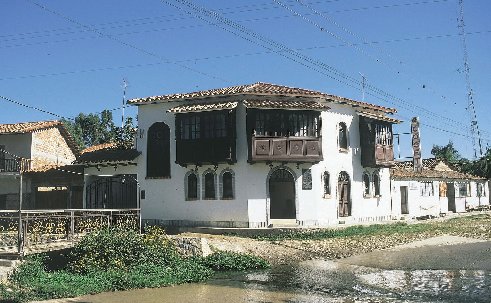
El pueblo de San Lorenzo o Tarija La Vieja, se caracteriza por su arquitectura colonial con casonas que tienen hermosos balcones. Representa además uno de los sentimientos más profundos del tarijeño y tarijeña por la historia y tradición. Se encuentra a 15 kilómetros al norte de la ciudad de Tarija.
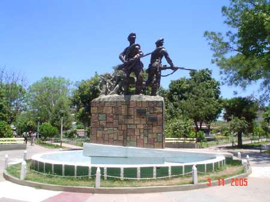
Yacuiba es la capital de la Provincia Gran Chaco, se encuentra a 3 kilómetros de la frontera con Argentina al norte de San José de Pocitos. Este municipio es bastante importante por el centro de comercio entre ambos países. Al otro lado de la frontera se encuentra Profesor Salvador Mazza en la provincia de Salta.
EL MARQUÉS RESTAURANTE - EVENTOS Café - Restaurante - Eventos “El Marqués” especialista en comida internacional en Tarija, Bolivia. www.elmarquesrestaurant.com Dirección: c. La Madrid Nro. 372, Plaza Principal (Central) - Tarija, TARIJA Teléfono: (591-4) 6637987 (591-4) 6676080 (591) 72991143
CROCAN POLLO Crocan Pollo es una empresa dedicada a brindar los mejores servicios alimenticios en el rubro de comida rápida en Tarija, Bolivia. www.crocanpollo.com Dirección: Av. Jaime Paz Nro. 1012 a Media cuadra de la Terminal (Terminal) - Tarija, TARIJA Teléfono: (591-4) 6638999
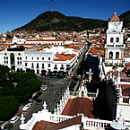
Sucre, Capital del Departamento de Chuquisaca, es también la capital constitucional del Estado Plurinacional de Bolivia; ubicada al sur del país, posee un clima agradable del que se goza todo el año. Es conocida como la ciudad de los 4 nombres “Charcas”, “La Plata”, “Chuquisaca”, “Sucre”.
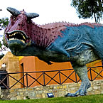
A pocos minutos de la ciudad de Sucre, se encuentra el yacimiento de huellas de dinosaurios más extenso del mundo. El imponente farallón de Cal Orck’o (cerro de cal) revela secretos de diversas especies de estos fabulosos animales, desaparecidos hace 68 millones de años.
CASA DEL CAMBA URUBÓ Restaurant de platos típicos del Oriente. El sabor típico del Oriente boliviano. Santa Cruz, Bolivia Dirección: Lado de la entrada a la Urbanización Villa Bonita - Santa Cruz de la Sierra, SANTA CRUZ Teléfono: (591-3) 3703013
EL HUERTO RESTAURANTE Restaurante. 23 años ofreciendo la mejor comida nacional e internacional. Un ambiente único, moderno y excluisvo para catar los mejores vinos y degustar la última oferta gastronómica en Sucre, Bolivia. www.elhuertorestaurante.net Dirección: c. Ladislao Cabrera Nro. 86 (San Matias) - Sucre, CHUQUISACA Teléfono: (591-4) 6451538
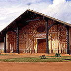
Este destino turístico de gran riqueza cultural e histórica, se ubica en la serranía oriental del Departamento de Santa Cruz, a unas seis horas de la capital. Su valor se manifiesta principalmente en la arquitectura de los templos; de estilo barroco mestizo.
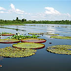
El Pantanal Boliviano se inicia en Puerto Suárez y se extiende hasta Puerto Busch en el Departamento de Santa Cruz; es una extensa llanura muy lisa en la parte superior del río Paraguay, su temperatura varía de 12°C a 24 °C, con cambios estacionales a veces significativos.
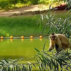
24 hectáreas, rodeado de plantas exóticas, bosques exuberantes y animales propios de la región. Un lugar en plena armonía entre el hombre y la naturaleza, en el que encontrará una variedad de flora y fauna en su hábitat natural.
BUGANVILLAS HOTEL SUITES & SPA * * * * * Hotel Suites & Spa en Santa Cruz de la Sierra, Bolivia. Hotel cinco estrellas en Santa Cruz. www.hotelbuganvillas.com Dirección: Av. Roca y Coronado Nro. 901 - Santa Cruz de la Sierra, SANTA CRUZ Teléfono: (591-3) 3551212
CASA DEL CAMBA URUBÓ Restaurant de platos típicos del Oriente. El sabor típico del Oriente boliviano. Santa Cruz, Bolivia Dirección: Lado de la entrada a la Urbanización Villa Bonita - Santa Cruz de la Sierra, SANTA CRUZ Teléfono: (591-3) 3703013
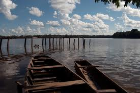
Se encuentran sobre el río Abuná, entre las provincias Teniente General F. Román y Filadelfia, a escasas dos horas de la vía fluvial por deslizador..
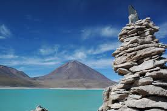
Esta población ubicada cerca del río Beni, en la parte Sur este del Departamento, muy fácil de acceder desde la ciudad de Riberalta, en el Departamento del Beni, ofrece elementos arqueológicos que aún hoy esperan por ser develados. Alrededor del pueblo existe un muro perimetral que algunas estudiosos han descrito como muros incas. Es posible encontrar restos de cerámica, no estudiada.
Curichi Del Cocodrilo Restaurantes, Restaurantes de comida nacional, Salones para recepciones Av. 16 De Julio N° 181 - 183 | Cobija, Pando
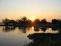
Se encuentra 5 Km. de Trinidad, hacia el sur. Es una laguna artificial, que fué construida por la antigua civilización Paititiana que la llamó Socoreno (Laguna de Animales), actualmente tiene el nombre de Laguna Suárez, debido a que fué adquirida por la firma Suárez Hnos., que tiene hermosa vista natural, lo que le da un enorme interés turístico.
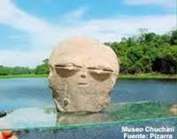
Este centro turístico esta ubicado a 14 Km. al noreste de la ciudad de Trinidad, Chuchini cuenta con lagunas y ríos para la pesca y navegación, como el Ibare, que desemboca al río Mamoré, al mismo tiempo cuenta con bosques para paseos y cacerías. Lo que llama la atención son las Lomas pre-coloniales donde se encuentran riquezas arqueológicas que atraen al turista extranjero. Chuchini significa "guarida del tigre"..
Restaurante Jacaranda Excelencia en servicios, en pleno centro de la ciudad de Trinidad. Dirección: La Paz entre Pedro de La Rocha y 18 de Noviembre Teléfono: 4622400
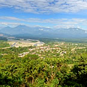
El Municipio de Villa Tunari es una invitación ideal a pasar vacaciones y fines de semana disfrutando de sus ríos y vegetación, que lo convierten en un lugar paradisíaco, apto para el descanso y la aventura. Este municipio cuenta con una variada infraestructura hotelera y servicios turísticos.
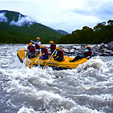
Situado en la cuenca amazónica del Chapare, se constituye en el paraíso del explorador y de los aventureros que practican deportes extremos como el rafting, canopy, rappel, parapente y otros. Dentro de su superficie se aprecia paisajes de gran belleza..
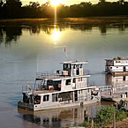
Esta población se encuentra a una altura de 180 m.sn.m. Antiguamente, la sede de este municipio se encontraba en las orillas del río Ichilo. Las migraciones a esta zona, posibilitaron el crecimiento demográfico de otras comunidades, tal es el caso de Ivirgarzama.
EL PALACIO DEL SILLPANCHO Tradición Cochabambina. Comida Típica en Cochabamba. Comida criolla. Especialidad en Sillpanchos www.elpalaciodelsillpancho.com Dirección: c. Baptista Nro. 434 (Central) - Cochabamba, COCHABAMBA Teléfono: (591-4) 4222732
RESTAURANTE MACHU PICCHU Cevichería, Comida Peruana Dirección: Av. Libertador Bolivar Nro. 1172 - Cochabamba, COCHABAMBA Teléfono: (591-4) 4247108 (591) 79555924
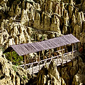
El Valle de La Luna, es un lugar que desafía la imaginación del visitante, generándole la sensación de estar en un pequeño páramo de la luna. Sus formas son producto de la erosión y asemejan cráteres volcánicos.
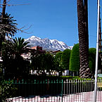
Sorata es un valle de clima templado y paisaje maravilloso, situado al pie del nevado Illampu. Existen varios paseos por los alrededores del pueblo, como el que va al seminario de Espada y a las pequeñas cascadas del río San Cristóbal.
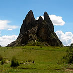
Gran mirador en las afueras de la ciudad, con una elevación rocosa monolítica natural de 150 metros de altura, que se destaca en el entorno paisajístico de la zona sur de La Paz. Tiene forma de una gran muela, siendo esa la razón de su nombre, además de leyendas del lugar.
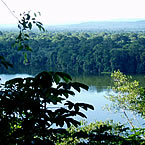
El Parque Nacional y Área Natural de Manejo Integrado Madidi es un destino de incomparable belleza natural donde 3,235 especies conviven en perfecta armonía con el ser humano. Es sin duda, el área protegida de mayor relevancia ecológica y biogeográfica de Bolivia.
LA TRANQUERA Restaurantes en La Paz. Gastronomía en Bolivia www.caminorealaparthotel-spa.com Dirección: c. Capitán Ravelo Nro. 2123 - La Paz, LA PAZ Teléfono: (591-2) 2441515 (591-2) 2441103 (591) 72066000
RESTAURANTE “VICUÑITA DE PLATA” Restaurante de comida Internacional y Nacional. Especialidad Flambes. www.hotelgloria.com.bo Dirección: c. Potosí Nro. 909, Hotel Gloria (Central) - La Paz, LA PAZ Teléfono: (591-2) 2407070
SUPER HAMBURGUESAS Heladería, confitería, restaurant, comida rápida, cine Dirección: c. Bolívar entre La Plata y Soria Galvarro - Oruro, ORURO Teléfono: (591-2) 25255129 (591-2) 25257302
HOTEL OPORTO * * * Hotelería. Hospedaje. Centro de Convenciones Hoteles en Oruro y Restaurante. www.hoteloportobolivia.com Dirección: Av. Brasil Nro. 5021 esq. 21 de Enero (Terminal) - Oruro, ORURO Teléfono: (591-2) 5282455 (591-2) 5279456 (591) 71183934